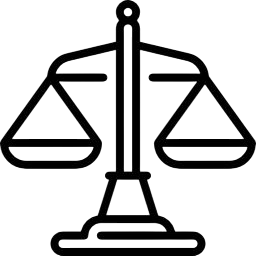

Meus Serviços
ASSISTÊNCIA TÉCNICA PERICIAL
Elaboro laudos com uma linguagem clara e direta, buscando simplificar a compreensão técnica e prática dos processos.

PERÍCIAS EM DIVERSAS ÁREAS
Atuo nas áreas Trabalhista, Cível, Previdenciária, de Trânsito, Direito de Família, Seguradoras, além de Auditoria Médica e Administrativa.

DIREITO MÉDICO
Realizo consultoria jurídica em processos cíveis relacionados a erro médico, presto assistência técnica pericial e ofereço consultoria para prevenção judicial voltada a clínicas e hospitais.